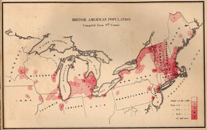

This is an archived copy of History Matters, provided by the Roy Rosenzweig Center for History and New Media. To explore this content in a new interface, visit Who Built America?.

Historical Maps of the United States
http://www.lib.utexas.edu/maps/histus.html
Created and maintained by the Perry-Castañeda Library, University of Texas at Austin.
Reviewed June-July, 2013.
Norman B. Leventhal Map Center Digital Collection
http://maps.bpl.org/view_collection
Created and maintained by the Norman B. Leventhal Map Center, Boston Public Library.
Reviewed June-July, 2013.
Although a small subset of the Perry-Castañeda Library’s 250,000 maps have been published online as Historical Maps of the United States, the selection provided by the site is a robust model for reclaiming and presenting important historical images for the digital age. Many are scanned maps from The National Atlas of the United States of America (1970), a massive compendium that became a staple in library reference collections. In 1998 that printed atlas was replaced by a version on compact disc; today, its contents consist of downloadable shapefiles and Geotiffs. As the technology for disseminating geospatial data has become more sophisticated, the range and content of the historical maps once represented in the atlas have been impoverished. Viewers can still find images of presidential elections and territorial acquisitions in these updated online collections, but one glance at these compared with the rigorous, detailed images from the 1970 print edition makes clear the wisdom of scanning the printed originals and making them available online.
An example is Early Indian Tribes, Culture Areas, and Linguistic Stockslocated under the site’s category Early Inhabitantsthe urmap that has informed basic understanding of Native America at the moment of contact. Open any U.S. history textbook and you will find the originals by which we have visualized the routes taken by European explorers across North America, the Proclamation Line, and the Louisiana Purchase. Under the site’s category Military History Maps, approximately one hundred maps, most reproduced from the U.S. Army Center of Military History publication American Military History (1989), are equally rich, foundational sources for understanding the spatial dimensions of warfare. A final category of the online map collection, Later Historical Maps, contains a cornucopia of cartographic imagery, including maps of U.S. cities, of national parks, of electric railways, of ethnic population clusters, and of military installations. Alongside Historical Maps of the United States, other Perry-Castañeda Library collections cover ten other world regions from Texas to Australia and the Pacific Ocean. Together, these historical maps make up a small portion of the library’s approximately fifty thousand online images, most of which are scans of its vast archive of Central Intelligence Agency world maps.

France’s territorial claims in North America, initially focused on the St. Lawrence River valley and the Great Lakes, can be traced to Samuel de Champlain’s explorations and trading activities in that region from 1603 to 1629. This rare 1632 map, Carte de la Nouuelle France, the last of several prepared by Champlain, accompanied his most complete publication describing his explorations in New France (Canada). Courtesy Norman B. Leventhal Map Center of the Boston Public Library, http://maps.bpl.org/id/m8645.
Once a viewer turns the page on a map that illuminates a historical argument, what happens to that image and the knowledge it represents? In particular, what is to become of the great masterpieces of interpretive historical cartography produced in the twentieth century that reside, largely unconsulted, within massive printed tomes housed in the map rooms of research libraries? These are the questions that Perry-Castañeda map librarians have worked to answer by uploading images to their historical maps sites, which make no attempts to leverage other Internet resources or interactions with users to enhance the viewing experience. The interface is a straightforward list of hyperlinked titles. Other than a simple line of text noting each map’s source and the size of its image file, none of the entries is associated with bibliographic metadata in the library’s electronic catalog or any other database. Clicking one of these links opens a jpeg file that can be downloaded with three clicks of the mouse. These have been compressed to ensure that they display quickly at the minimum resolution required to view their smallest details; while these are clearly visible, close inspection reveals the trade-off: blurred edges of fine text and the trademark distortions or artifacts created by the file compression process. This streamlined approach has made it possible to scan, upload, and distribute images of thousands of maps. As fully accessible as url-linked jpegs they can be easily featured as content in other digital humanities projects.
The Boston Public Library’s digital collections focus on older maps. Unlike the utilitarian links provided by the Perry-Castañeda Library, the maps in the Boston library’s Norman B. Leventhal Map Center Digital Collection are each tagged with a rich array of metadata and fully integrated into a searchable electronic catalog. This means that, at the click of a mouse, viewers can see all of the maps that relate to subjects ranging from African American teachers to the American Revolution and to places from Boston to Sudan. After clicking a thumbnail image, the Zoomify-based map viewer encourages the close inspection of high-resolution images and offers a fullscreen button that opens a new window with a separate url. Teachers can copy these urls to make use of the maps' fine detail and interactivity in any Internet-enabled classroom. Opening Samuel de Champlain’s Carte de la Nouuelle France (1632), for example, displays the map above a detailed narrative description. The page also offers a similar searches link that goes to other collections of maps under such headings as Great Lakes Region (North America) and Indians of North America. Visitors who want to make their own use of this image outside of this congenial interface can do so by clicking download for print to receive a 406kb image of Champlain’s map or download full size for a 51.4 mb version. Many of the collection’s images, including Champlain’s map and 3,397 others, are available at multiple resolutions as downloadable and url-linked images at the map center’s Flickr photo stream.
The radical accessibility to high-resolution images that is a hallmark of this Web site is a boon to map-history research and digital humanities project development. The recently added Atlas Neptune collection displays 272 images from J. F. W. Des Barres’s breathtaking late eighteenth-century maritime atlas. The London National Maritime Museum Web site was previously the only place to view a comprehensive collection of these important charts online, but the images are so well protected behind that museum’s page that they are difficult to obtain at research-quality resolutions and impossible to download. As librarians charged with curating rare images debate how to design digital portals to their collections, they should fight the urge to limit access and should embrace the Boston Public Library’s commitment to share its images as openly as possible with a scholarly community eager to make use of them.
S. Max Edelson
University of Virginia
Charlottesville, Virginia